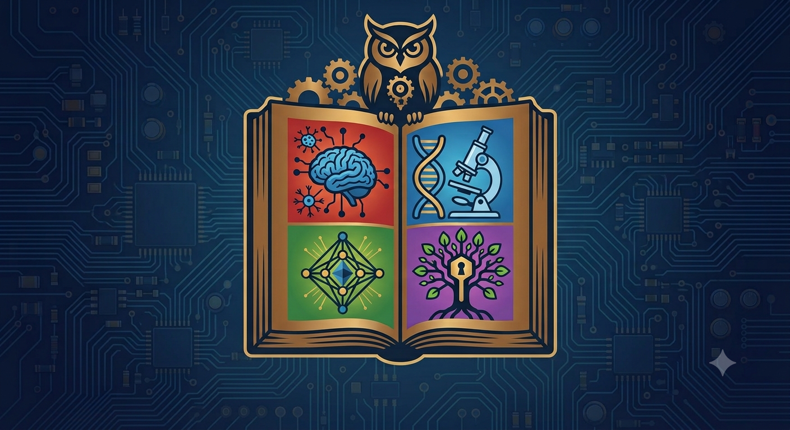

Vou compartilhar conhecimentos sobre tecnologia e programação.

O primeiro computador não foi a máquina de Turing?
Por: JOÃO VITOR
Apesar de Alan Turing ser conhecido como pai da
computação, ele não criou o primeiro computador.
Entre os primeiros computadores, um deles foi
chamado Colossus...
Embora o Colossus tenha funcionado antes como um
"herói de guerra" especializado, o ENIAC é
frequentemente considerado o primeiro computador
de uso geral.
E aí, qual você considera o primeiro computador?
Fonte:
The National Museum of Computing
A evolução dos computadores
Por: JOÃO VITOR
Os computadores passaram por uma enorme evolução
ao longo das últimas décadas.
As primeiras máquinas ocupavam salas inteiras e
tinham uma capacidade de processamento muito menor
que a de um computador moderno.
Hoje, temos computadores muito mais rápidos,
compactos e acessíveis.
Fonte:
História da Computação
O que é programação?
Por: JOÃO VITOR
Programação é o processo de criar instruções para
que um computador possa realizar determinadas
tarefas.
Existem diversas linguagens de programação, como
HTML, CSS, JavaScript, Python e muitas outras.
Aprender programação pode ser uma ótima maneira
de entender melhor como a tecnologia funciona.